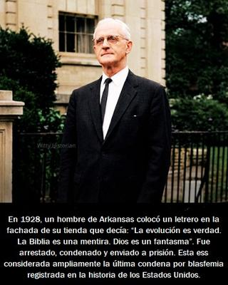

Resulta realmente impactante que en un país con una Constitución laica como los Estados Unidos, se haya condenado legalmente a alguien por blasfemia todavía hace poco menos de un siglo. Se trata de Charles Lee Smith (1887–1964), un autor y activista ateo, y supremacista blanco estadounidense. Criado como metodista en Maud, Oklahoma, Smith ingresó a la Universidad Epworth en Oklahoma City para estudiar teología; sin embargo, el estudio y el debate allí lo llevaron más bien a volverse ateo.


En noviembre de 1925, Smith fundó la Asociación Americana para el Avance del Ateísmo (A.A.A.A. o «las 4A») en la ciudad de Nueva York, una de las primeras organizaciones ateas militantes del país. Y como parte de su activismo ateo, en 1928 alquiló una tienda en Little Rock, Arkansas, donde se dedicó a repartir literatura atea y antirreligiosa gratuita. En la fachada del local puso un letrero que decía: «La evolución es verdad. La Biblia es una mentira. Dios es un fantasma».
El mensaje era deliberadamente provocador, con el objetivo de exponer la estrecha relación que aún existía entre las leyes locales y las creencias religiosas en los Estados Unidos de principios del siglo XX. Smith estaba plenamente consciente del impacto de sus acciones, y las autoridades respondieron con rapidez. Fue arrestado bajo una acusación de infringir una ley local, una ordenanza municipal contra la blasfemia. No pudo testificar en su propia defensa, porque se negó a jurar sobre la Biblia, por lo que el juez desestimó el cargo original, sustituyéndolo por uno de distribución de literatura obscena, difamatoria o injuriosa. Smith fue declarado culpable, multado con 25 dólares, y sentenciado a 26 días de cárcel. Su notorio ayuno en prisión atrajo la atención de los medios nacionales.
Después de su liberación, Smith reanudó de inmediato sus actividades ateas, siendo acusado nuevamente de blasfemia, y esta vez sí condenado por ese «delito». En el juicio, se le negó de nuevo el derecho a testificar por no jurar sobre la Biblia, por lo que tuvo que cumplir una pena de noventa días de cárcel, más una multa de 100 dólares. Tras quedar de nuevo en libertad bajo una fianza de 1000 dólares, Smith apeló el veredicto, y el caso se prolongó durante varios años, hasta que finalmente fue desestimado.
Uno se pregunta: ¿Por qué hace menos de un siglo una persona fue condenada por blasfemia en un país que enorgullece de tener una Constitución laica? —Y esto se debe a que la laicidad constitucional en ese país no se aplicó automáticamente a los estados, que durante décadas mantuvieron leyes heredadas del puritanismo colonial. La Primera Enmienda de los Estados Unidos, adoptada en 1791, prohíbe sólo al Congreso Federal establecer una religión oficial, restringir el libre ejercicio religioso, limitar la libertad de expresión o prensa, y coartar el derecho a la reunión pacífica y a presentar peticiones al gobierno. Pero esto no aplica a legislaciones estatales. Por tanto, aunque la Constitución era laica; la cultura jurídica no lo era.
Al final, la blasfemia desapareció como delito en los Estados Unidos, no por iluminación moral, sino por presión constitucional. Leyes estatales contra la blasfemia sobrevivieron hasta bien entrado el siglo XX. Algunas no fueron formalmente derogadas hasta los años 50 y 60, siendo decisivo no el legislador, sino la Corte Suprema. Con el tiempo sin embargo, leyes antiblasfemia quedaron legalmente muertas, aunque algunas siguieran escritas en papel. Si bien las leyes de blasfemia permanecieron técnicamente vigentes en algunos estados durante décadas, los tribunales se negaron cada vez más a aplicarlas. Y aunque algunos estados mantienen todavía leyes de blasfemia, la Corte Suprema las considera inconstitucionales desde 1952 bajo la Primera Enmienda, por lo que ya no se aplican.
Por otra parte es importante aclarar, que aunque como ateos admiramos ese coraje que tuvo Charles Lee Smith para desafiar abiertamente el contexto religioso en que se encontraba, tampoco podemos idealizarlo como persona. Porque Smith no fue sólo ateo y antirreligioso, sino además antisemita, supremacista blanco y partidario del darwinismo social. Rechazaba la igualdad humana y veía tanto el cristianismo como el marxismo como conspiraciones judías.
Smith expuso sus ideas en su libro «Sensism: The Philosophy of the West» (Sensismo: La filosofía de Occidente, 1956). Él pensaba que los procesos evolutivos también afectaban a la humanidad, y como partidario del darwinismo social, negaba la igualdad entre las etnias humanas. Smith creía que el cristianismo y el marxismo habían sido inventados por los judíos para tomar el poder sobre la humanidad.
Pero esto no invalida la injusticia que sufrió, porque la libertad de expresión se defiende incluso —y sobre todo— cuando protege a personas con ideas muy diferentes. Sin embargo, no podemos convertir a Smith en un héroe moral.
Finalmente debemos comprender que, dado que la blasfemia se define como una ofensa a cierta divinidad, encierra una contradicción que la vuelve todavía más absurda, ya que ningún Ser Supremo, omnipotente y perfecto puede ser ofendido. Porque sentirse ofendido es propio de seres inseguros, limitados y vulnerables. De modo que, si ese «Dios» existiera y fuera además benevolente, jamás avalaría el castigo —y mucho menos la pena capital— por simples palabras humanas. Pero la verdad es que nunca se castigó a nadie para proteger a un «Dios» inexistente. Se castigó para proteger el poder, la autoridad religiosa y la fragilidad psicológica de los creyentes.
Al menos la vida de Charles Lee Smith no terminó por una pena capital, que afortunadamente no ha existido por blasfemia en los Estados Unidos, falleció por causas naturales en 1964, en San Diego, California. Pero sí fue la última persona documentada condenada penalmente por blasfemia en ese país, aunque la pena fuera solamente cárcel y multas.
A nosotros la historia de Charles Lee Smith no muestra algo inquietante: hasta hace apenas unas décadas, en la autoproclamada «tierra de la libertad», pensar mal de «Dios» podía llevarte a la cárcel. Y esto, a pesar de que la blasfemia no es un crimen contra lo divino, sino un crimen inventado por humanos incapaces de tolerar la duda.
[Godless Freeman]
[Crédito de imagen: Witty Historian]
https://en.wikipedia.org/wiki/Blasphemy_law_in_the_United_States
Comentarios
Comments powered by Disqus